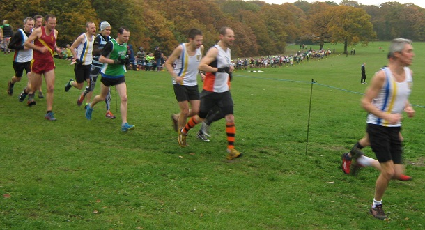
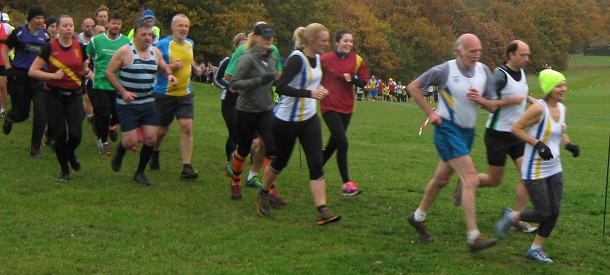

Andrew Mead led home Sevenoaks' 27 runners at Oxleas Woods for the third Kent Fitness League match of the season, with Cath Linney once again leading the SAC women. Cath was third W45, while Sally Shewell was second W55 with Glenda Goscomb third. As in the two previous races, James Graham was first M60. And in his best result of the series so far, Chris Desmond was third M50. In the team race, the SAC men were third, the women fourth and the combined team fourth, and our teams hold those same positions in the standings after three races.

The SAC results were as follows:
| Ov Pos | Lg Pos | Runner | Age | Time | Club | Rating | # Races |
|---|---|---|---|---|---|---|---|
| 28 | 27 | Andrew Mead | 48 | 35:50 | Sevenoaks AC | 91.07 | 28 |
| 37 | 36 | Andrew Milne | 34 | 36:20 | Sevenoaks AC | 87.97 | 8 |
| 38 | 37 | Lee Lintern | 36 | 36:21 | Sevenoaks AC | 87.63 | 22 |
| 39 | 38 | Chris Desmond | 53 | 36:25 | Sevenoaks AC | 87.29 | 76 |
| 47 | 46 | Daniel Witt | 41 | 36:54 | Sevenoaks AC | 84.54 | 36 |
| 48 | 47 | Andy Ashlee | 47 | 37:01 | Sevenoaks AC | 84.19 | 20 |
| 57 | 54 | Edmond Grobel | 37 | 37:34 | Sevenoaks AC | 81.79 | 2 |
| 61 | 58 | Michael McCarthy | 51 | 37:43 | Sevenoaks AC | 80.41 | 18 |
| 75 | 71 | James Graham | 63 | 38:26 | Sevenoaks AC | 75.95 | 14 |
| 105 | 96 | Tony Waldron | 49 | 39:34 | Sevenoaks AC | 67.35 | 17 |
| 115 | 11 | Cath Linney | 47 | 40:01 | Sevenoaks AC | 92.59 | 24 |
| 131 | 119 | John Stevens | 55 | 40:41 | Sevenoaks AC | 59.45 | 17 |
| 158 | 18 | Heather Fitzmaurice | 47 | 41:57 | Sevenoaks AC | 87.41 | 60 |
| 164 | 145 | Andy Evans | 46 | 42:12 | Sevenoaks AC | 50.52 | 32 |
| 198 | 171 | Duncan Cochrane | 59 | 43:37 | Sevenoaks AC | 41.58 | 21 |
| 202 | 29 | Joanna Grobel | 33 | 43:48 | Sevenoaks AC | 79.26 | 2 |
| 212 | 31 | Sally Mortleman | 51 | 44:29 | Sevenoaks AC | 77.78 | 10 |
| 240 | 39 | Nicki Thompson | 40 | 45:51 | Sevenoaks AC | 71.85 | 16 |
| 247 | 43 | Sarah Shewell | 57 | 46:14 | Sevenoaks AC | 68.89 | 92 |
| 263 | 47 | Glenda Goscomb | 58 | 47:36 | Sevenoaks AC | 65.93 | 5 |
| 276 | 49 | Georgia Butler | 23 | 48:28 | Sevenoaks AC | 64.44 | 3 |
| 302 | 242 | Maurice Marchant | 68 | 50:12 | Sevenoaks AC | 17.18 | 29 |
| 305 | 62 | Becca Crowe | 56 | 50:27 | Sevenoaks AC | 54.81 | 3 |
| 314 | 250 | Lyndon Collins | 66 | 51:02 | Sevenoaks AC | 14.43 | 58 |
| 333 | 75 | Clair Thornton | 41 | 52:03 | Sevenoaks AC | 45.19 | 12 |
| 344 | 82 | Happy Fisher | 40 | 53:02 | Sevenoaks AC | 40.00 | 42 |
| 362 | 268 | James Fitzmaurice | 74 | 54:04 | Sevenoaks AC | 8.25 | 57 |
The full results are here.

The next KFL is not until 8th January at Minnis Bay, while the next Kent League match at Danson Park on 26 November has no senior men's race. Entries have already been finalised for the Kent Masters XC at Dartford on 3 December, but SAC members will shortly be invited to enter the Kent XC Champs at Brands Hatch on January 7th.